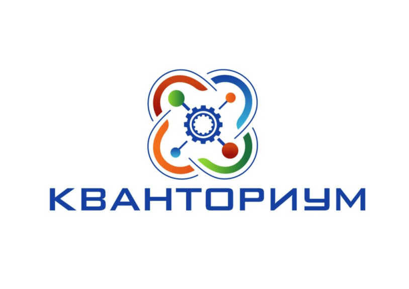

На данном сайте я собрал проекты учеников IT квантума и хочу представить их вам.
«Кванториум» – это уникальная среда для ускоренного развития ребенка по актуальным научно-исследовательским и инженерно-техническим направлениям, оснащенная высокотехнологичным оборудованием. Отличительной особенностью является не только обучение детей инженерному образованию, но и проектной деятельности, ТРИЗ (теория решения изобретательских задач), 4К-компетенциям (коммуникация, креативность, командное решение проектных задач, критическое мышление) и решение реальных производственных задач в сопровождении опытных наставников, в том числе представителей научной школы, промышленности и бизнеса.
